APRS was all about showing you what was on RF around you and giving you a digital communications tool to share and exchange information rapidly in real time. Some follow-on software clones in their rush to get better maps, have left new users with little familiarity with many of the fundamental principles of APRS. This web page will show you many of the original APRSdos features intended for use by the APRS operator in the field on RF that I think many people overlook.
Download aprs876.zip for the APRSdos version. Then read the README\INSTALL.TXT
But first, a typical 128 mile range scale view of my local area centered near Washington DC (actually, this was 1996 or so)
RF Range:
First thing about RF is that you have to know the communications range stations around you.
All APRS stations are supposed to transmit their Power-Height-Gain parameters in their
position report so you can see their range. Looking at the PHG circles is fundamental to
the real-time tactical, in the field Ham Radio nature of APRS. The map below
shows PHG ranges of users and digis in my area (32 mile range scale with most map features
and my ALOHA circle turned off).
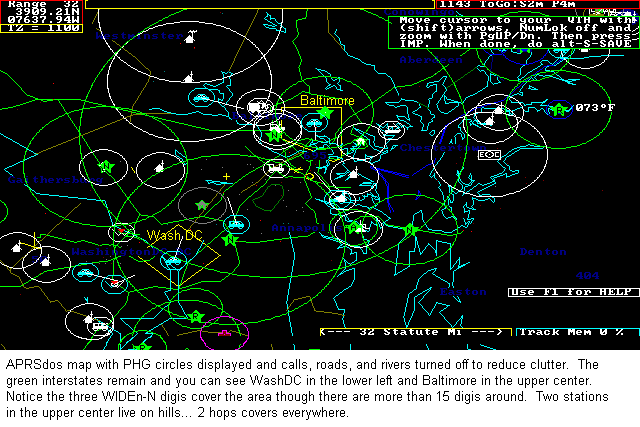
DIGIPEATERS PHG: Of course the most important use of PHG is in visualizing what
area is covered by different digipeaters. The below APRSdos map shows central VA with
PHG circles turned on and Users turned off. Notice how all maps are displayed with the
RANGE-SCALE shown in the upper left corner. Also show is the estimated TIME-ZONE
at the center of the map. This map is at the 64 mile range scale meaning
that the view covers at least 64 miles in radius around my station. My station is off
screen to the North East and only my yellow ALOHA circle is visible:
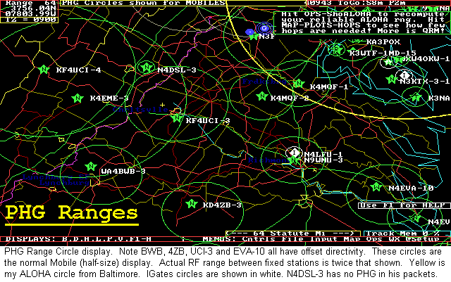
HOPS DETERMINATION: The most practical use of PHG circles is determining
coverage areas and direct paths from point A to point B or in determining the
number of hops that are needed to get to a given area. The MAPS-PLOT-HOPS command
in APRSdos colors in the PHG range coverage for each digi and colors it proportional
to the number of hops that digi's packet took to get to you. This is the same map
as before, but zoomed out to the 128 mile scale.
This was taken in 2003 before the New-N paradigm when digis were cluttering up the
channel with rediculuous paths like WIDE5-5!
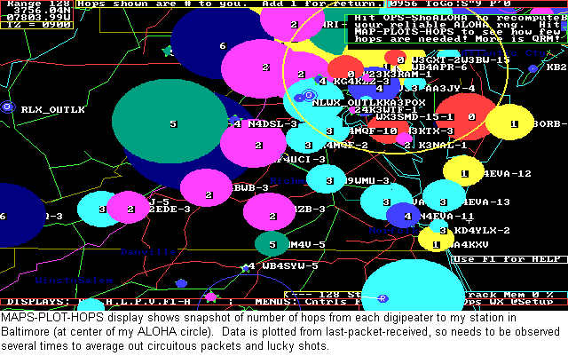
USER HOPS DISPLAY: The next map below shows the same HOPS display but for
users and not digipeaters. This shows you the number of hops the last packet from
that station took to get to you. Again, watching it over time gives you a good feel
for the path to users. Notice most stations in my ALOHA circle I hear in one
hop. Remember this is ust an instantaneous snapshot and so some packets due
to collisions may take a round-about path at this instant. Unfortunately, however,
many fixed stations these days use UIview which not only does not display
PHG range data but also does not make it easy for users
to transmit it either. Thus, APRSdos displays most UIview stations with a small
8 mile default circle which is equivalent to a 25W station with a 40 foot antenna
and 3 dB omni.
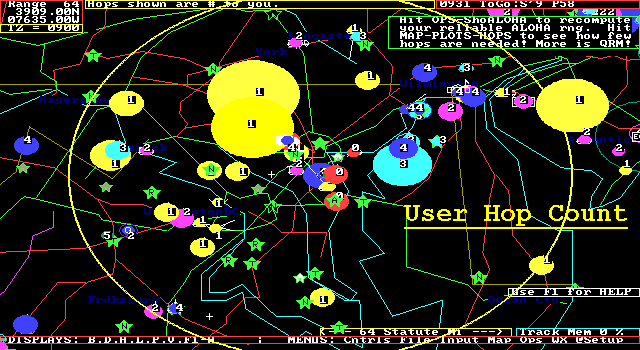
PATHING WITHOUT DIGIPEATERS: Of course, when the digipeater in an area goes
down is when PHG circles really have value in letting the user in the field quickly
re-configure and use his neighbors for paths into certain areas. The map below zooms into
the 32 mile range around my home station (NOCALL here) and
turns off most map features to eliminate map clutter and shows how easy it is to
determine workable paths by digipeating via neighbors. Ignore the RANGE-RINGS
centered on my station which are temporarily turned on so that you can see the
radio range from my station.
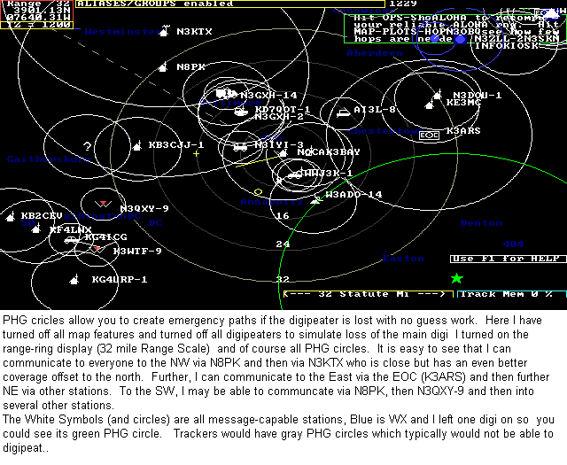
PATH TRACING: Another very userful disply of PHG data is during a TRACE display.
This not only shows the path that a packet took to get to you , but also the PHG
range circles of each of the digis so you can see how the network is working.
The use of non-tracing WIDEn-N paths for the last several years almost killed this
capability, but under the New n-N Paradigm, now all paths will be tracable and so
this is a very neat display for monitoring the performance of your network. See
how the mobile down in North Carolina got to me via 5 hops (and why these days
we are trying to get people to undrstand that such long paths are not welcome
in this area)...
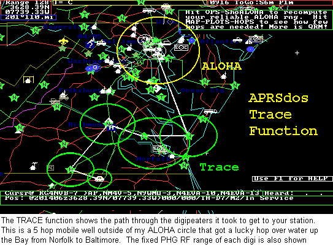
OMNI-DIRECTIONAL SIGNAL-STRENGTH FOX-HUNTING: Another very powerful capability
which uses PHG data is the fox-hunting technique ussing signal strength contours from
reporting stations who only report relative signal strength on the fox (or jammer).
The reported signal strength is used to draw a colored circle which is inversly
proportional to the PHG range of each station. Thus a STRONG report will show a
small circle and a very weak signal will plot to the full size of the stations
PHG circle but will be colored gray. A signal report of 0 (nothing heard)
is also JUST AS VALUABLE because it can show all the area where the fox or jammer
can not be. A NOT-HEARD report will draw a circle about 10% larger than the
stations PHG circle and make it dark gray (and MOST reports you will get
will be 0!). After receiving several signal strength
reports, or entering voice reports on the map as objects, simply press MAP-PLOT-DF-OMNI
to see the overlaping contours and the fox or signal source will be close to the
intersection of the most overlapping COLORED circles as shown below:
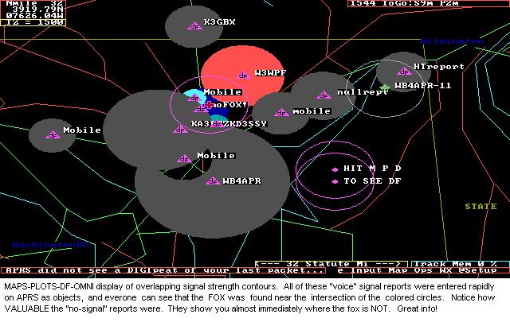
See more details on APRS DFing techniques
OTHER NETWORK OBSERVATION TOOLS - HEARD PAGE:
The HEARD page is also a very valuable tool for looking at the use of the network
This page shows how many packets per hour have been heard from every station for the
last 23 hours. This is very valuable at quickly finding PATH problems in the network
where a user might be using the old WIDE,WIDE,WIDE type path that is prone to very
heavy dupe generation. See the two WXXXXX stations about half way down, generating
about 30 packets per hour!
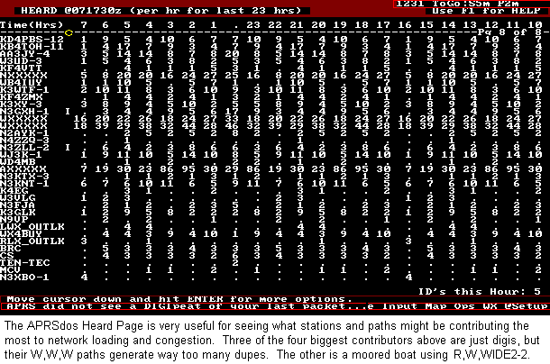
The DIGIPATH PAGE: is also very valuable at analyzing the network and what
people are doing with it. Particularly, it now also shows overall statistics on
the kinds of paths people are using. Notice on this one that 48% of the packets
on the air are using the old RELAY and WIDE paths (and consuming over 70%) of
channel capacity due to excessive dupes!). That was back in March 2005. Now
in October, that number is down to 20%, and the network is MUCH-MUCH quieter.
You can even hear silence for several seconds at a time in one of the highest APRS
densities on earth.
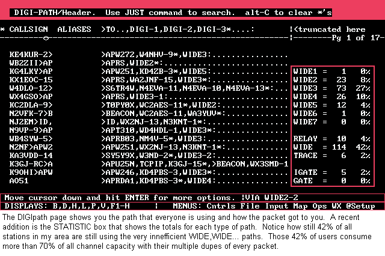
FINDING AND SORTING SPECIFIC DATA: This same page can be used in many ways to search
for and find what people are using.. Paths, Software, Versions, etc.
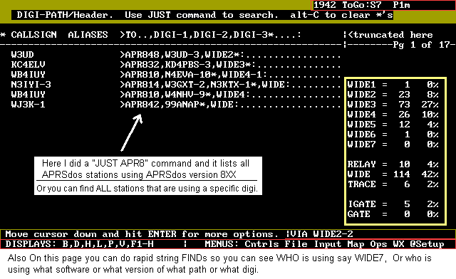
DIGI-RANGE DISPLAY: The Analyze-Range Command is very useful for seeing
the range of a given digi. This command draws white lines from the digipeater
to all stations that have hit it direct.
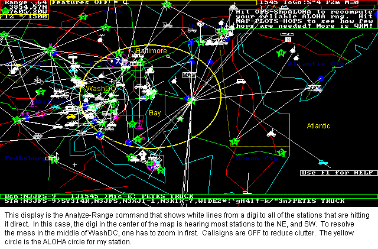
POSITIONS PAGE: The positions page can also be sorted by station type (mobiles, weather
HF, Active, Digis, Objects, Special, ICON type, and Special). This one selected JUST MOBILES.
Notice that all position packet formats are all decoded and displayed as the single consistent
full APRS format, including Mic-E's.
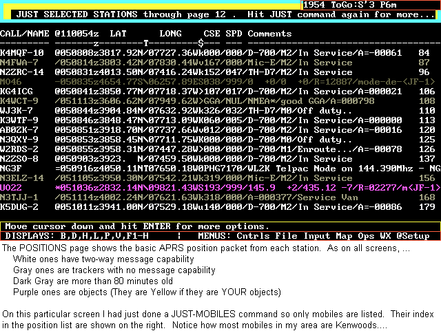
3D MAPS: FOr balloons and Aircraft, APRSdos can show the map in 3D. This is a replay
of a Balloon launched just west of Montreal. Notice the ground track of little circles as
well as the altitude track...
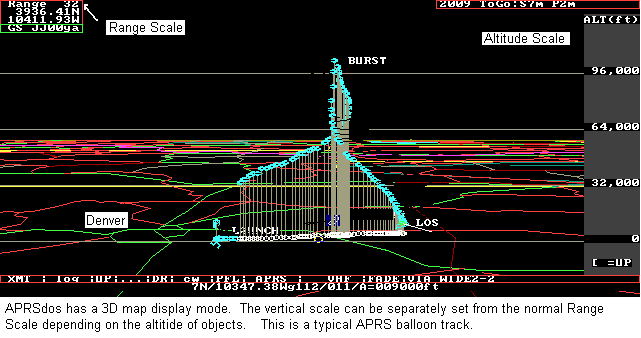
MILE MARKS: APRS is not just for tracking GPS stations. APRS can track anything and
any object. I like to keep track of non-APRS users who report their position during a QSO
by Mile Mark. I just put them on the map and since APRSdos dead reckons all objects,
then joe will just keep moving on my map and I can always see about where he is as time
passes. During the 10 hour road trip to dayton, this is lots of fun for QSO's with
non APRS stations on 146.52:
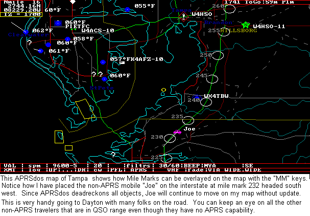
The MM-DATA.DAT file can be used by any APRS program to overlay milemarks of any
of the interstates anywhere in the USA.
Download Mile Marks file for USA
DEAD RECKONING OBJECTS AROUND A MARATHON: Another feature of a special version of
APRSdos called APRSdr is its ability to dead reckon any object around any course such as
a marathon. This way ARPS can track many runners at a marathon without anyone carrying
anything. And APRSdr then transmits these moving objects to everyone monitoring on APRS
and to them, all these objects appear to be moving in real time.
Read about it
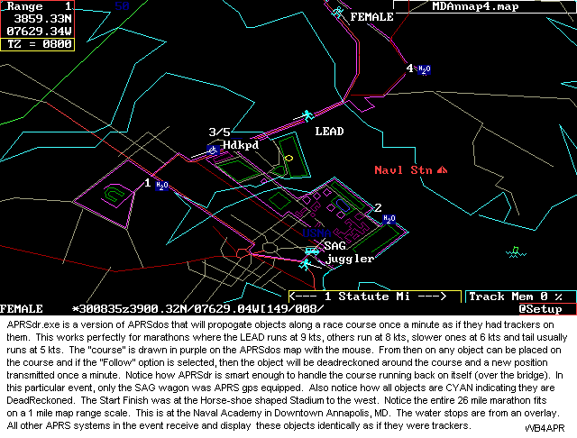
I can go on for hours. Rather than continue to bring all the various displays into this
web page, it might be better just to let you link to them:
de WB4APR, Bob
See SITEMAP of other related web pages
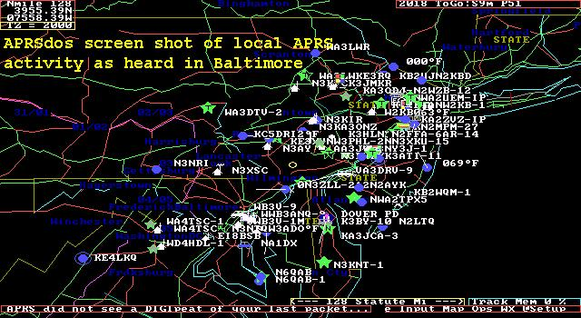
Go see all about Direction Finding Techniques and displays
Or see all about SYMBOLS and COLORS and Attributes
And more and more, but I have run out of time tonight...